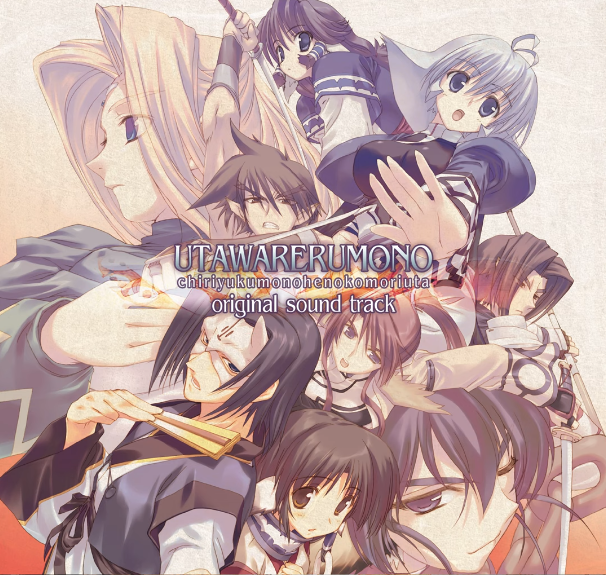

Miscellaneous
This is where I keep random things. (Last updated: August 2025)
Songs
Here are some songs that I can't get over recently
キミガタメ - Suara
Been wanting to play Utawarerumono but didn't have the energy and time :(

Trust You Forever - 鵜島仁文
Too classic and too good. Been listening to this since childhood and I still can't get bored of it.
Didn't learn about Ushima's passing until recently... RIP.

Working hard to hit 6,000 rating in CS:GO. Need help lol.
Also toying with the idea of returning to making Vocaloid stuff, but the spark of desire is faint.